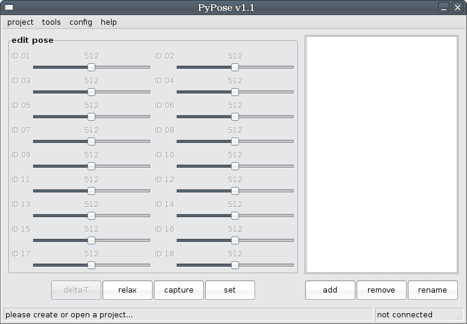
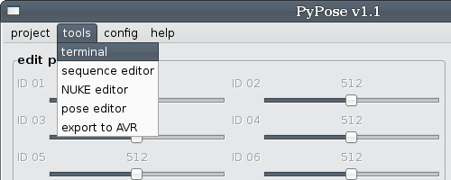
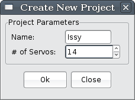
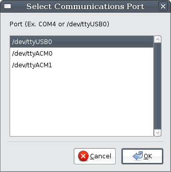
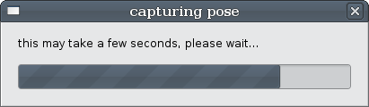
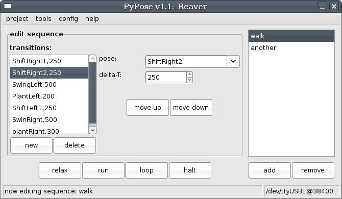
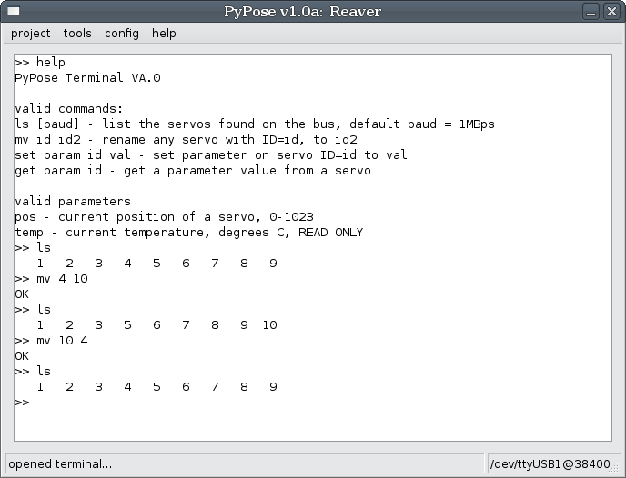

Introduction
One of the most important features of AX-12 servos is that we can move the servo to a particular position by hand and read the position back from the servo. This feature allows us to pose the robot, and capture the pose. PyPose began as a simple open-source pose and capture program, written in Python and using wxPython for a graphical package. Traditionally, roboticists might create a series of poses, and then assemble them into a motion sequence.
As has often been said, there is more than one way to solve any problem. Motion sequences can be created extremely quickly using PyPose, but they do have limitations:
- Poses are not dynamic: given a limited number of poses, you have a limited number of positions the body can go to.
- Sequence creation can become quite repetitive if you desire a higher degree of control of the robot.
The logical improvement is to parameterize the poses. By adding or subtracting the value of a dynamic parameter we can vary the response of our poses and motion sequences far more than before. This can easily be done in software after you export.
Of course, the holy grail of motion control is to have a fast Inverse Kinematics engine. Using inverse kinematics, we can compute how to place the foot of a robot into any position it can physically occupy. The Nearly Universal Kinematics Engine, or NUKE, is a highly templated IK solution for quadrupeds and hexapods. After answering a series of questions about the construction of the robot, we can automatically build an IK engine for the robot. Why then would we even offer poses and sequences?
- NUKE still has a limited number of configurations it can handle, if you are building something like a biped you will have to use poses.
- IK can be slow. If you have other important code to run, you may not be able to run a full IK engine.
Regardless of the method of motion creation, PyPose exports your work directly into C code that can be loaded onto the arbotiX using the Arduino IDE. PyPose also has a Terminal for editing servo parameters.
Hardware Setup
See the GettingSetup page.
Getting Started
We can finally start PyPose, the initial view will look something like this:

Figure 1 - The PyPose program when first loaded, showing empty pose list and pose editor.
This default view is the Pose Editor, one of the many tools in PyPose. There is a menu bar across the top of the program at all times, and a status bar across the bottom of the window. The left hand side of the status bar prompts you with please create or open a project. The right hand side of the status bar shows our connection status, telling us that we are currently not connected to a robot. The tools menu is probably the most important, as it lets us switch between the Pose Editor, Sequence Editor, NUKE, and other tools:

Creating a New Robot, Connecting to the arbotiX
The first thing we need to do is to create a project. A project is where we will store our poses, sequences, and IK/FK configurations. Click on project|new in the menu, and the Create New Project dialog will appear. Enter the name of your robot, and the number of servos used. Note: currently, servos must be number sequentially, if you have 12 servos, they must be ID1 to ID12, you can change the ID of a servo using the Servo Terminal. We are now ready to begin actually talking with our robot. You can repeatedly save and open project files.


Figure 2 - Create New Project and Select Communications Port windows.
To communicate with our robot, we need open a port to our XBEE explorer, or FTDI board. You can open a port by clicking on config|port in the menu, and selecting a port name in the Select Communications Port box that will pop up (shown above). While PyPose will find most serial ports, there is a chance that it cannot automatically detect your port. If this happens, use the instructions on the serial command below to open a port through the Terminal.
The default baud rate for the arbotiX is 38400bps, if you are using XBEE radios, be sure they are paired, and set to 38400bps. A tutorial on setting up XBEE radios can be found at the Trossen Robotic Community.
The Pose Editor
Once you have created a robot, PyPose will adjust to show the correct number of sliding servo adjustment bars. The box to the right of the adjustment bars displays the names of poses we have captured, since we have not captured any, it will be blank. Below the pose list, we have two buttons: add and remove, for creating a new pose or deleting one. Click on add and enter a name for your pose. For instance, I typically create a pose named "stand", for the default standing position of my bot. If you click on a pose in the list, it's servo values are loaded into the slider bars.
We also have 4 buttons underneath our servo adjustment bars: delta-T, relax, capture, and set. relax shuts of the servo torque, allowing you to pose the robot into place. set will write the current servo adjustment bar values out to the robot's servos. If during a set operation, the servos were to move too fast, the robot or operator could be injured. The delta-T button brings up a dialog to select how long transitions take. This time defaults to 500ms, or half a second.
capture allows us to read the values into the slider bars. When you click capture, a status indicator will appear:

Figure 3 - capture status bar.
It should disappear quite quickly, unless PyPose has trouble reading a servo. When complete, the lower left corner of the status bar will either say "capture done!" to indicate success, or list a set of servos it could not query. If you have trouble, check to make sure that you have entered the correct number of servos during robot setup, and that all of your wires are tight. Old wires may have to be replaced.
Servo values can be manually edited after a capture, just move the sliding adjustment bars. The left and right arrow keys can be used to fine tune the values. Using the shift key and the left and right arrows you can jump large amounts.

Figure 4 - PyPose, after a successful capture.
Note: Be careful when clicking capture, as it will overwrite any data attached to the pose currently selected in the pose list. We are currently revamping the pose interface to be more data safe!
There are several keyboard accelerators for the PyPose Pose Editor:
- Ctrl-A - advance to a new pose, this creates a default name for a new pose and then selects the pose.
- Ctrl-C - capture to the current pose.
- Ctrl-R - relax servos.
The Sequence Editor
Selecting tools|sequence editor will display the sequence editor instead of the pose editor. The sequence editor, shown below in figure 5 contains a group of controls dedicated to editing an individual sequence and a list of sequences on the right side of the screen. Below the sequence editor are four buttons: relax, run, loop, and halt. relax works just like it did in the pose editor. run, loop and halt will start and stop the sequence you are currently editing from running. run runs the sequence through one iteration or until a halt is received, loop will cause the sequence to run until a halt command is received. The download of a sequence to the arbotiX may take a few moments. Below the list of sequences are two buttons: add and remove for creating and deleting sequences.

Figure 5 - PyPose, sequence editor tool.
A sequence is simply a compilation of transitions that will be played in order (from the top of the transition box to the bottom of the box). Each transition consists of a pose to transition to, and a time to take during the transition denoted as delta-T. The new and delete buttons can be used to add new transitions or delete existing ones. Each new transition added to the box has a default pose of none and a time of 500ms (1/2 of a second). The move up and move down buttons can be used to rearrange transitions.
Exporting to the AVR
Selecting tools|export to AVR will allow you to save a C header file, which contains all of your poses and sequences, in a format that stores them in FLASH memory, and makes them available to the BioloidController.
Servo Terminal
The servo terminal is a useful tool for configuring servos that are connected to an ArbotiX or USBDynamixel. It currently implements only a subset of it's eventual commands. It can currently be used to query an ArbotiX to find out what servos are attached, or to change the ID number of a servo:

Figure 6 - PyPose Terminal, showing a sequence of edits.
Figure 6 shows a typical interaction with the Terminal. We need to remember to open the port. The user then typed help to see commands, then ls to see the servos and found out that servos 1,2,3,4 were attached. They then changed servo 4's ID to 5. Now, when listing the servos with ls, they got 1, 2, 3, and 5. Finally, they changed servo 5 back to ID4 and ran ls one final time to be sure all went good. The current command list is as follows:
- ls - list the servos attached to an ArbotiX.
- mv current_id new_id - renumber a servo
- serial port_name - open a serial port. ex: serial /dev/ttyUSB0
- help - access help menu
Commands that are still under development:
- ls baud - list, with baud rate change
- set param index value - set a parameter (position, speed, tuning)
- get param index - get a parameter (position, speed, temp, tuning)
Hacking
Robot pose files are plain text. The format is quite simple, the first line is the robot name and servo count, separated by a colon. Each line after that should be a pose or sequence. A pose is composed of a name, colon, and then the servo values. A sequence has a name, followed by a colon, and then a list of pairs of pose names and transition times.
myNewRobot:4
Pose=pose1: 512, 512, 512, 512
Pose=poseX: 92, 104, 92, 800
Seq=myFirstSequence: pose1|1000, poseX|500, pose1|800
The communications protocol used by PyPose and the sketch on your arbotiX is essentially the same as the Bioloid bus itself. We have, however, defined additional registers, and an ID of 253 will command the arbotiX to act on these special registers, which allows things like pose and sequence upload and live playback.